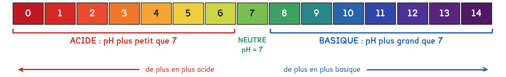
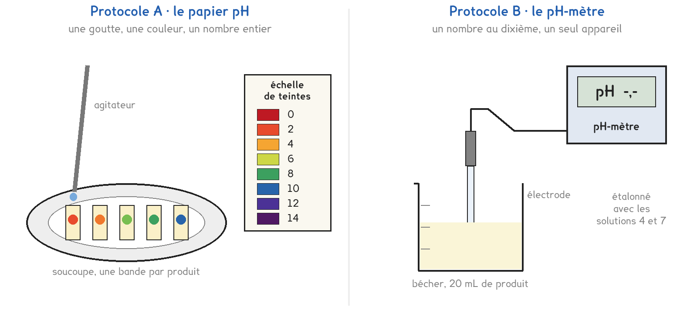

CAP · toutes spécialités · TP commun CAP-03
Que disent les produits de la maison sur leur étiquette, et que dit leur pH ?
2 figures
Sujet. Sous l’évier, il y a du vinaigre blanc, du bicarbonate, un pain de savon et un détartrant. Le détartrant porte un pictogramme de danger ; le vinaigre de cuisine, non.
Problématique : que disent les produits de la maison sur leur étiquette, et que dit leur pH ?
Le détartrant et le décapant four circulent fermés dans la classe. On ne les ouvre pas.
a) Relever sur les deux étiquettes, en entourant.
| Le détartrant | Le décapant four | |
|---|---|---|
| Le mot écrit | Attention · Danger | Attention · Danger |
| Le dessin | flamme · main rongée · point « ! » | flamme · main rongée · point « ! » |
| Les protections | lunettes · gants · les deux | lunettes · gants · les deux |
Voici l’échelle de pH, et la couleur que prend le papier pH.

b) Avec l’échelle, écrire acide, neutre ou basique.
pH 3 : …………………… · pH 7 : …………………… · pH 11 : ……………………
Série · acide, neutre ou basique ? Entourer. Le premier est fait.
| pH 2,4 : acide | pH 7 : acide · neutre · basique |
|---|---|
| pH 9,5 : acide · neutre · basique | pH 6,5 : acide · neutre · basique |
| pH 12 : acide · neutre · basique | pH 7,5 : acide · neutre · basique |
Deux protocoles répondent à la même question. Le labo n’a qu’un pH-mètre : un seul poste prend B, tous les autres prennent A, et on compare à la fin.
Protocole A · le papier pH. Une goutte de produit sur une bande de papier pH ; on compare sa couleur à l’échelle de teintes.
Protocole B · le pH-mètre. L’électrode plonge dans le produit ; l’écran affiche le pH au dixième.
Dans les deux cas, on dilue ensuite le vinaigre 10 fois, puis 100 fois, et on remesure.

c) Compléter le tableau pour comparer les deux protocoles, en entourant.
| Protocole A | Protocole B | |
|---|---|---|
| Ce qu’on lit | une couleur · un nombre | une couleur · un nombre |
| Sa précision | à 1 près · au dixième | à 1 près · au dixième |
| Combien de postes | tous · un seul | tous · un seul |
Le choix se fait maintenant, avant de toucher au matériel. Le professeur désigne le poste B.
d) Entourer votre protocole, puis la raison.
Protocole A · Protocole B
parce que : tous les postes en ont · on veut le pH au dixième
Avant de mesurer, on fait une hypothèse.
e) On ajoute beaucoup d’eau au vinaigre. Son pH, entourer :
descend vers 0 · monte vers 7 · dépasse 7
Avant de commencer
Lunettes et gants pendant toute la manipulation.
Le détartrant et le décapant four restent fermés. Le papier ne va jamais dans le flacon : on y porte une goutte avec l’agitateur.
f) Schématiser votre mesure de pH, puis nommer la verrerie utilisée.
Le schéma se dessine sur la feuille du TP.
Pour chaque produit, noter le pH, puis écrire s’il est acide, neutre ou basique.
g) Relever les mesures.
| Le produit | vinaigre | dilué 10 fois | dilué 100 fois | eau | bicarbonate | savon |
|---|---|---|---|---|---|---|
| pH | ||||||
| Il est |
h) Le vinaigre dilué 100 fois : son pH est-il plus grand que celui du pur ?
oui · non. A-t-il dépassé 7 ? oui · non. Hypothèse e confirmée : oui · non
i) Relever le pH du vinaigre pur mesuré avec l’autre protocole.
pH = ……………………. Écart de 1 au plus avec le vôtre : oui · non
j) Le décapant four a un pH voisin de 13. Il est, entourer :
très acide · neutre · très basique
Son pictogramme, la main rongée, dit qu’il brûle la peau · sent mauvais · s’enflamme.
Série · combien de fois dilué ? Volume final ÷ volume de produit. Le premier est fait.
| de 10 mL à 100 mL : 10 fois | de 5 mL à 50 mL : …………………… fois |
|---|---|
| de 20 mL à 200 mL : …………………… fois | de 10 mL à 1 L : …………………… fois |
| de 25 mL à 250 mL : …………………… fois | de 1 mL à 100 mL : …………………… fois |
Pour finir, on revient aux produits de l’évier.
k) Répondre à la problématique en une phrase.
Ce que ce TP a établi, à écrire sous la dictée du professeur :
À RETENIR
À compléter en classe, sur la feuille du TP.
TP commun de physique-chimie, toutes spécialités. Le travail se fait sur la feuille du TP : cette page en est la version à l'écran, sans les lignes à remplir. Rien n'est enregistré.